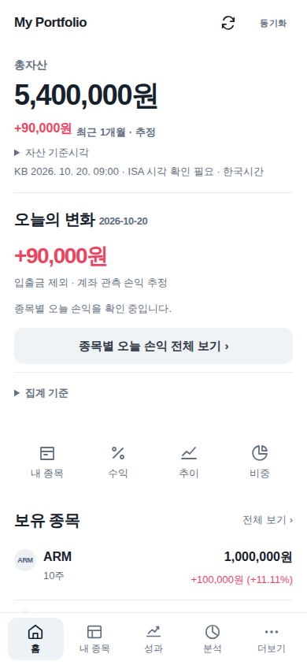
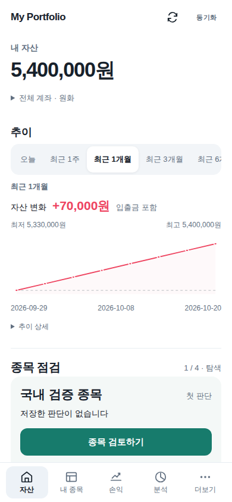
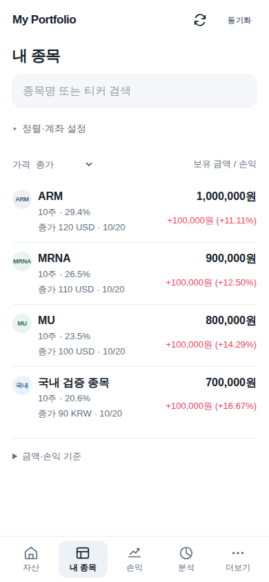
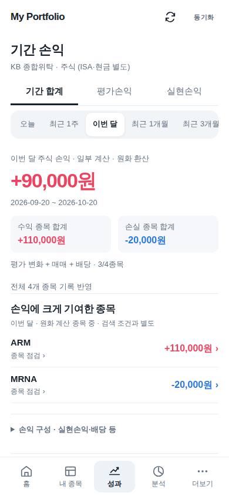
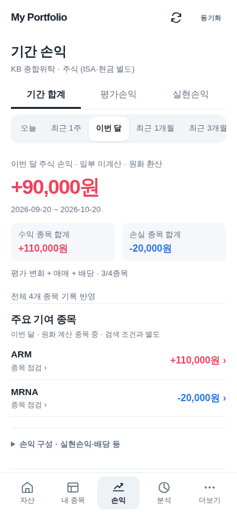

내 자산 → 추이 → 종목 판단
Build213. 아래 화면은 실제 앱 코드에 동일한 가상 계좌를 넣어 촬영했습니다. 개인 계좌·메모를 사용하지 않았습니다.
세 안의 차이
| 안 | 종목 탐색과 판단 | 장단점 |
|---|
| A 자산 지도 | 비중 영역 선택 → 같은 화면에서 판단 | 구성을 빠르게 이해. 작은 종목은 목록 보완 필요. |
| B 종목 점검 · 채택 | 한 종목 검토 → 판단 저장 → 다음 종목 | 다음 행동이 명확하고 기록 없이도 시작. 여러 종목 비교는 목록 이용. |
| C 판단의 시간 흐름 | 과거 판단 → 확인된 변화 → 새 판단 | 보유 이유 복기에 유용. 기록이 적을 때는 목록 탐색 필요. |
B안을 실제 데이터·기존 판단 기능에 연결했습니다. 처음에는 저장한 재점검 조건에 도달한 종목을 먼저 보여주고, 직접 고른 뒤에는 그 탐색 위치를 이 기기에서 기억합니다. 종목을 넘기거나 보는 것만으로 판단을 저장하거나 점검 완료로 처리하지 않습니다. 새 공식 자료와 기존 확인 표시는 펼쳐보는 판단 목록에 유지됩니다.
첫 화면
앞: 기준시각·오늘 손익·바로가기 다음에 목록, 추이는 더 아래. 뒤: 큰 자산 금액, 가까운 기간·변화 금액·그래프, 바로 이어지는 종목 검토.
Build212
Build213
내 종목
기존 모바일 입력·계좌·시장·정렬·외화 가격·목록 복귀를 보존했습니다. 네 종목을 읽을 수 있는 밀도는 유지하고 종목 점검에서 전체 목록으로 이동할 수 있습니다.
Build212Build213
손익
‘일부 미계산’과 ‘추정’은 금액 해석에 필요해 남겼습니다. 현재 보유분의 평가손익과 선택 기간의 손익은 합치지 않습니다. 계산값·집계 범위를 바꾸지 않았습니다.
Build212
Build213
필요할 때 펼쳐보기
- 전체 계좌 · 원화: 계좌별 기준시각과 기간 손익 근거
- 추이 상세: 마지막 기록, 실제 기록 범위와 입출금 설명
- 판단 기록: 비교 가정·저장 시점은 ‘비교·저장 정보’에서 확인
390 × 844, 같은 가상 데이터·기간·기본 펼침 상태의 Chromium 화면입니다. 실제 아이폰, Face ID, 홈화면 재실행, iOS 키보드는 실기기 확인이 필요합니다.